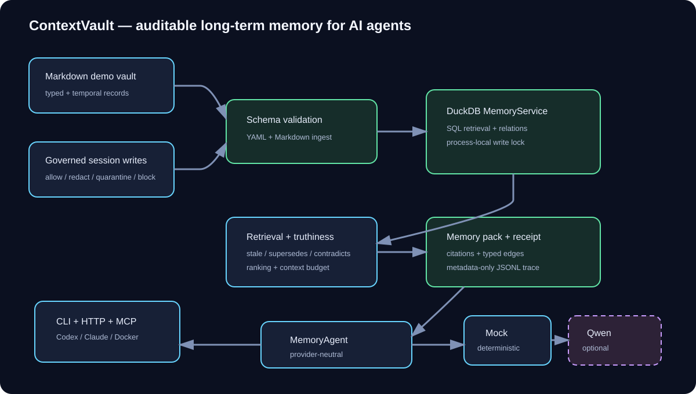

Session state
Where is this task right now?
Useful for continuing one workflow across prompts or handoffs.
ContextVault is a local memory prototype for long-running multi-agent coding work. It keeps architectural decisions, preferences and warnings current across sessions, with citations and receipts for the context an agent used.

Typed records and governed writes flow through a local memory service into budgeted memory packs for CLI, HTTP and MCP adapters.
In long-running software work, the failure mode is not only that an agent cannot find information. It can also find old information and treat it as current.
Useful for continuing one workflow across prompts or handoffs.
AGENTS.md, README files and generated repo wikis help the agent orient inside one repository.
A catalog tells the agent what related projects, standards and source-of-truth files to inspect.
This is the ContextVault layer: current decisions, stale warnings, superseded records and auditable context use.
A Markdown note or ADR log is often enough for a small project. A repo wiki helps an agent understand one codebase. A catalog helps with cross-repo navigation.
ContextVault sits between those lightweight patterns and an enterprise context platform. It is for work where architectural alignment matters, but a full internal developer portal would be too heavy.
The prototype asks a narrower question: can a local memory layer tell an agent which decision is current, which record is stale, what superseded what, and why a piece of context was selected?
Prompt memory. Good for one-off work; disappears across sessions.
Markdown notes. Useful for small projects; stale or conflicting notes remain a human problem.
ADRs and decision logs. Good for explicit architecture history; agents still infer what is current.
Structured Markdown. Adds types, dates and status; truth resolution is still mostly manual.
Local governed memory service. ContextVault: current memory packs, stale exclusion, write policy, citations and receipts.
Enterprise context platform. Ownership, permissions, compliance and organization-wide governance.
ContextVault is not a replacement for repo documentation, ADRs, cross-repo catalogs, vector search or enterprise context platforms.
It is a local single-user portfolio prototype, not a multi-tenant production service. DuckDB is used for an embedded local store, and horizontal write scaling is explicitly out of scope.
The measured evaluation is synthetic and deterministic. It validates memory-system behavior and citation contracts, not model quality or business impact.